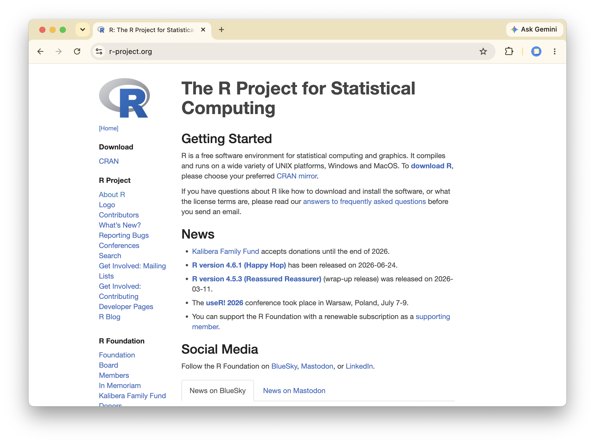
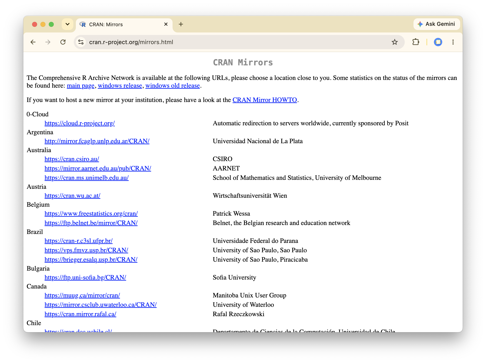
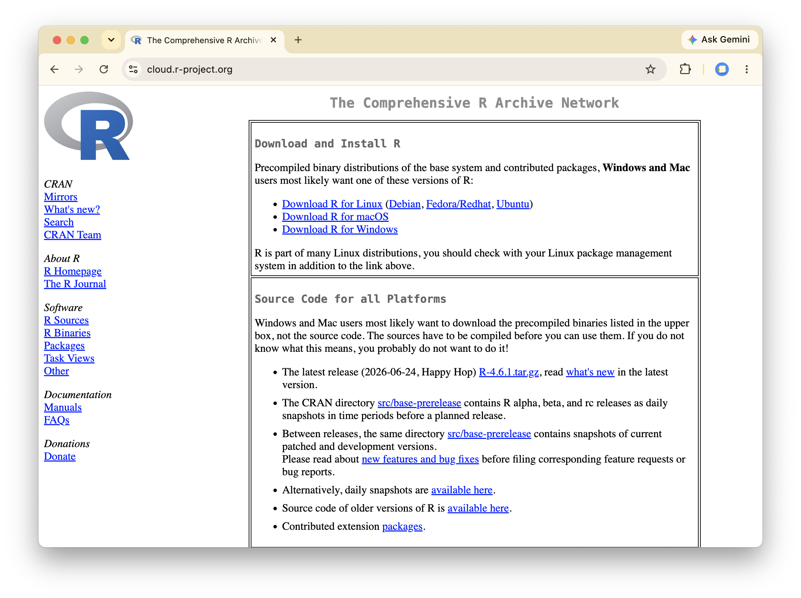

Intro to R
A Calculator in the File System
Last Time
- Data is stored on a computer disk in files.
- Files are stored in directories.
- Files and directories can be structured using a tree.
- Each file’s location is defined by its path.
- A UNIX shell is used to modify the file system.
Key Ideas for Today
- R evaluates expressions like a calculator.
- Functions take arguments and can have defaults.
- Values can be saved as objects in the environment.
- An R session, like the shell, has a working directory.
- Warnings vs. errors.
UNIX Shell Bonus Round
Shell Command Options
In addition to path arguments, shell commands have options that change the way they work.
A few ls options:
| Option | Meaning |
|---|---|
| -l | Long format (permissions, owner, size, date) |
| -h | Human-readable sizes (e.g. 4.0K), used with -l |
| -R | Recurse into subdirectories |
Intro to R



R as a calculator
R is a calculator
Start R via the command line using
And exit it by running q().
Structure of an R function
Function
A named procedure that takes arguments (inputs) and returns a value. Arguments can be supplied by position or by name, and some have default values.
Structure of an R function
Creating objects
Object
A value saved into your environment under a name, using the assignment arrow <-. Calling the name on its own prints the value.
Creating objects
The R environment
Environment
The collection of all objects currently defined in your R session, each stored under its name. Assignment adds or updates an object in the environment; ls() lists what it contains.
R on the file system
From the shell to R
Last time we moved around the file system at the command line. An R session has the same idea of a working directory — and its own functions to get around.
| Task | Shell | R |
|---|---|---|
| Where am I? | pwd |
getwd() |
| What’s around me? | ls |
list.files() |
| Change where I am | cd |
setwd() |
| See a file’s contents | cat |
readLines() |
Where am I? What’s around me?
Moving and reading files
Warnings and errors
Warning
A message telling you something might be off. The code still runs and returns a value.
Error
A message telling you the code could not run. No value is returned.
Warnings and errors
Case study: distances traveled
How far did we travel this summer?
Recall the second question on your index card: the farthest you were from Cal this summer, in miles.
Reading the distances into R
Converting and summarizing
Key Ideas for Today
- R evaluates expressions like a calculator.
- Functions take arguments and can have defaults.
- Values can be saved as objects in the environment.
- An R session, like the shell, has a working directory.
- Warnings vs. errors.
For Next Time
- Download and install R.
- If on Windows, install git bash.
- Work through the R questions on PS 1 at your own console.